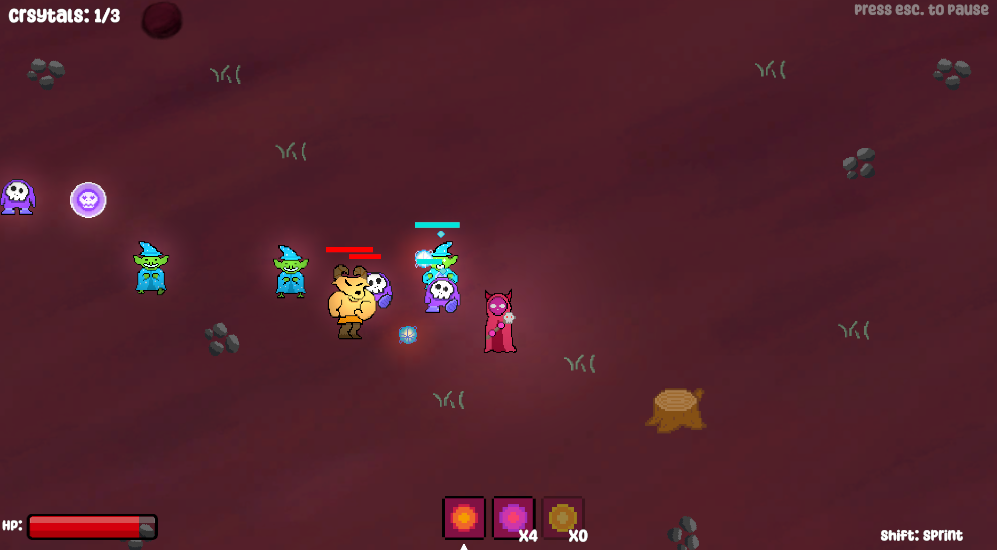
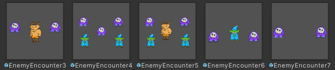

Necro-Mage: Stronger Together!
Unity, C#
An action game in which you are able to defeat enemies and resurrect them to fight by your side. The project was created in the span of one week for game dev club's Winter 2023 game jam. I served as a programmer/designer for a small group consisting of myself and three others.
My most notable contributions to the game were developing the AI targeting system, engineering the level generation, designing the combat encounters, and implementing all of the art and animations created by our artist.
- AI Targeting:
The NPC targeting for the game seemed daunting at first, but once broken down, it was somewhat simple to implement. All targeting would be handled with a NPCStateController script on each unique NPC, being set to one of three pre-defined states: Ally, Enemy, and Dead. With this set up, you could very simply switch the NPCs current state based on the players actions (killing or reviving), and force certain targeting patterns from the state.

- Level Generation:
I had never really generated levels for a game before this project, but I wanted to give it a shot for the sake of doing it. The idea I ended up settling on was grid based, where every tile on the grid would have a number of required and optional components:Required:
- floor texture
Optional:
- Enemy Encounter
- Portal Crystal
- Item Pickup
- Art Decoration
A global StructureGenerator object would be used to control how many of each optional component we wanted on the whole map, and me or our other designer could modify the variables through the inspector to tweak the level design.
It would have been fun to play around with it more and see how we could've innovated on it to make more interesting levels and set pieces, but alas, we had only one week for the jam. I overall thought it came out well and gives me a lot of inspiration if I ever make a foray into level generation again.
.png)
.png)
.png)
.png)